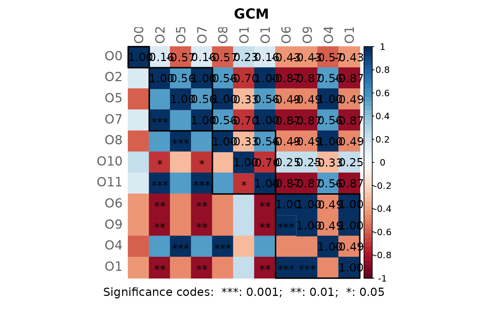

Computes the Graphlet Correlation Matrix (GCM) of a network, given as adjacency matrix.
The GCM of a network is a matrix with Spearman's correlations between the network's node orbits (Hocevar and Demsar, 2016; Yaveroglu et al., 2014).
The function considers only orbits for graphlets with up to four nodes.
Orbit counts are determined using the function count4
from orca package.
Unobserved orbits would lead to NAs in the correlation matrix, which is
why a row with pseudo counts of 1 is added to the orbit count matrix
(ocount).
The function is based on R code provided by Theresa Ullmann (https://orcid.org/0000-0003-1215-8561).
Usage
calcGCM(adja, orbits = c(0, 2, 5, 7, 8, 10, 11, 6, 9, 4, 1))Arguments
- adja
adjacency matrix (numeric) defining the network for which the GCM should be calculated.
- orbits
numeric vector with integers from 0 to 14 defining the graphlet orbits to use for GCM calculation. Minimum length is 2. Defaults to c(0, 1, 2, 4, 5, 6, 7, 8, 9, 10, 11), thus excluding redundant orbits such as the orbit o3.
Details
By default, only the 11 non-redundant orbits are used. These are grouped according to their role: orbit 0 represents the degree, orbits (2, 5, 7) represent nodes within a chain, orbits (8, 10, 11) represent nodes in a cycle, and orbits (6, 9, 4, 1) represent a terminal node.
References
Hocevar T, Demsar J (2016). “Computation of graphlet orbits for nodes and
edges in sparse graphs.” Journal of Statistical Software,
71, 1–24.
Yaveroglu ON, Malod-Dognin N, Davis D, Levnajic Z, Janjic V, Karapandza R,
Stojmirovic A, Przulj N (2014). “Revealing the hidden language of complex
networks.” Scientific reports, 4(1), 1–9.
Examples
# Load data set from American Gut Project (from SpiecEasi package)
data("amgut1.filt")
# Network construction
net <- netConstruct(amgut1.filt,
filtTax = "highestFreq",
filtTaxPar = list(highestFreq = 50),
measure = "pearson",
normMethod = "clr",
zeroMethod = "pseudoZO",
sparsMethod = "thresh",
thresh = 0.5)
#> Checking input arguments ...
#> Done.
#> Data filtering ...
#> 77 taxa removed.
#> 50 taxa and 289 samples remaining.
#>
#> Zero treatment:
#> Zero counts replaced by 1
#>
#> Normalization:
#> Execute clr(){SpiecEasi} ...
#> Done.
#>
#> Calculate 'pearson' associations ...
#> Done.
#>
#> Sparsify associations via 'threshold' ...
#> Done.
# Get adjacency matrices
adja <- net$adjaMat1
# Network visualization
props <- netAnalyze(net)

plot(props, rmSingles = TRUE, cexLabels = 1.7)
# Calculate Graphlet Correlation Matrix (GCM)
gcm <- calcGCM(adja)
gcm
#> $gcm
#> O0 O2 O5 O7 O8 O10 O11
#> O0 1.0000000 0.39267906 0.1582768 0.3242392 0.1582768 0.6766859 0.3242392
#> O2 0.3926791 1.00000000 0.5536742 0.8165382 0.5536742 0.1095796 0.8165382
#> O5 0.1582768 0.55367418 1.0000000 0.6855771 1.0000000 0.3058042 0.6855771
#> O7 0.3242392 0.81653824 0.6855771 1.0000000 0.6855771 0.1730876 1.0000000
#> O8 0.1582768 0.55367418 1.0000000 0.6855771 1.0000000 0.3058042 0.6855771
#> O10 0.6766859 0.10957964 0.3058042 0.1730876 0.3058042 1.0000000 0.1730876
#> O11 0.3242392 0.81653824 0.6855771 1.0000000 0.6855771 0.1730876 1.0000000
#> O6 0.6953513 0.08571015 0.2737340 0.1473592 0.2737340 0.9020241 0.1473592
#> O9 0.6953513 0.08571015 0.2737340 0.1473592 0.2737340 0.9020241 0.1473592
#> O4 0.1582768 0.55367418 1.0000000 0.6855771 1.0000000 0.3058042 0.6855771
#> O1 0.7524380 0.05372207 0.2360482 0.1147146 0.2360482 0.8186652 0.1147146
#> O6 O9 O4 O1
#> O0 0.69535132 0.69535132 0.1582768 0.75243796
#> O2 0.08571015 0.08571015 0.5536742 0.05372207
#> O5 0.27373396 0.27373396 1.0000000 0.23604818
#> O7 0.14735917 0.14735917 0.6855771 0.11471459
#> O8 0.27373396 0.27373396 1.0000000 0.23604818
#> O10 0.90202408 0.90202408 0.3058042 0.81866523
#> O11 0.14735917 0.14735917 0.6855771 0.11471459
#> O6 1.00000000 1.00000000 0.2737340 0.90849770
#> O9 1.00000000 1.00000000 0.2737340 0.90849770
#> O4 0.27373396 0.27373396 1.0000000 0.23604818
#> O1 0.90849770 0.90849770 0.2360482 1.00000000
#>
#> $ocount
#> O0 O2 O5 O7 O8 O10 O11 O6 O9 O4 O1
#> 307981 3 0 0 0 0 8 0 3 3 0 4
#> 331820 1 0 0 0 0 0 0 0 0 0 1
#> 73352 0 0 0 0 0 0 0 0 0 0 0
#> 322235 1 0 0 0 0 0 0 0 0 0 0
#> 71543 3 0 0 0 0 8 0 3 3 0 4
#> 469709 1 0 0 0 0 0 0 0 0 0 1
#> 158660 1 0 0 0 0 0 0 0 0 0 0
#> 512309 1 0 0 0 0 0 0 9 6 0 6
#> 188236 0 0 0 0 0 0 0 0 0 0 0
#> 248140 0 0 0 0 0 0 0 0 0 0 0
#> 364563 0 0 0 0 0 0 0 0 0 0 0
#> 278234 0 0 0 0 0 0 0 0 0 0 0
#> 353985 0 0 0 0 0 0 0 0 0 0 0
#> 301645 3 0 0 0 0 8 0 3 3 0 4
#> 361496 0 0 0 0 0 0 0 0 0 0 0
#> 90487 0 0 0 0 0 0 0 0 0 0 0
#> 190597 0 0 0 0 0 0 0 0 0 0 0
#> 259569 0 0 0 0 0 0 0 0 0 0 0
#> 326792 0 0 0 0 0 0 0 0 0 0 0
#> 541301 0 0 0 0 0 0 0 0 0 0 0
#> 305760 3 0 0 0 0 8 0 3 3 0 4
#> 184983 0 0 0 0 0 0 0 0 0 0 0
#> 549871 0 0 0 0 0 0 0 0 0 0 0
#> 127309 0 0 0 0 0 0 0 0 0 0 0
#> 326977 0 0 0 0 0 0 0 0 0 0 0
#> 181095 0 0 0 0 0 0 0 0 0 0 0
#> 130663 0 0 0 0 0 0 0 0 0 0 0
#> 244304 0 0 0 0 0 0 0 0 0 0 0
#> 311477 0 0 0 0 0 0 0 0 0 0 0
#> 516022 0 0 0 0 0 0 0 0 0 0 0
#> 274244 0 0 0 0 0 0 0 0 0 0 0
#> 590083 0 0 0 0 0 0 0 0 0 0 0
#> 191541 0 0 0 0 0 0 0 0 0 0 0
#> 181016 0 0 0 0 0 0 0 0 0 0 0
#> 9715 7 15 0 9 0 0 24 0 0 0 0
#> 9753 3 0 0 0 0 8 0 3 3 0 4
#> 190464 0 0 0 0 0 0 0 0 0 0 0
#> 195102 0 0 0 0 0 0 0 0 0 0 0
#> 268332 2 1 0 0 0 0 0 0 0 0 0
#> 361480 0 0 0 0 0 0 0 0 0 0 0
#> 470973 0 0 0 0 0 0 0 0 0 0 0
#> 223059 0 0 0 0 0 0 0 0 0 0 0
#> 334393 1 0 0 0 0 0 0 0 0 0 0
#> 288134 0 0 0 0 0 0 0 0 0 0 0
#> 119010 3 0 0 0 0 8 0 3 3 0 4
#> 194648 0 0 0 0 0 0 0 0 0 0 0
#> 302160 0 0 0 0 0 0 0 0 0 0 0
#> 199487 0 0 0 0 0 0 0 0 0 0 0
#> 175617 1 0 0 0 0 0 0 0 0 0 0
#> 312461 0 0 0 0 0 0 0 0 0 0 0
#> pseudo 1 1 1 1 1 1 1 1 1 1 1
#>
#> attr(,"class")
#> [1] "GCM"
# Plot heatmap of the GCM
plotHeat(gcm$gcm)